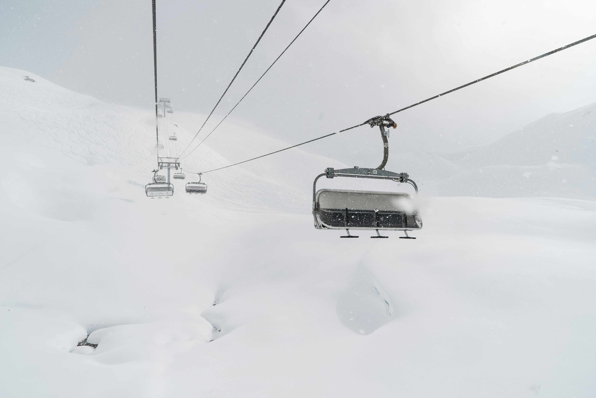
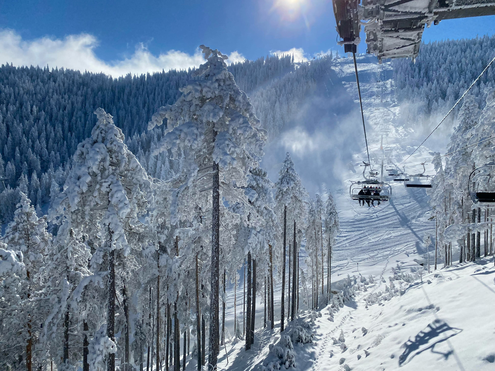

Destinations
Europe
Prague - the city of a hundred spires
Prague is one of the most beautiful cities in Europe, known for its fairytale architecture, narrow cobblestone streets, and the famous Charles Bridge that spans the Vltava River.
The Prague Castle and the Old Town Square take your breath away with their beauty, while evening walks along the river create a romantic atmosphere you will never forget.
This arrangement offers the perfect combination of culture, history, and entertainment – ideal for those who want to experience the magic of Central Europe.

Berlin - the city that never sleeps

Berlin is a metropolis that combines rich history with a modern spirit – from the Brandenburg Gate and the Berlin Wall to artistic districts and a vibrant nightlife.
A stroll along the Unter den Linden boulevard reveals impressive museums and monuments, while popular neighborhoods like Kreuzberg and Mitte immerse you in the city’s contemporary rhythm.
This arrangement offers a unique opportunity to experience Berlin as a city of culture, freedom, and nonstop energy.
Budapest – the Pearl of the Danube
Budapest, a city of magnificent palaces and thermal springs, enchants with its architecture and picturesque views of the Danube.
A stroll along the majestic Parliament, crossing the Chain Bridge, and the view from Gellért Hill take your breath away.
This arrangement offers the perfect combination of culture, history, and relaxation – an experience you will remember forever.

Summer 2025
Kuşadası – the Jewel of the Aegean Sea
A well-known tourist destination on the Turkish coast, Kuşadası captivates with its beautiful beaches, crystal-clear waters, and vibrant nightlife.
Enjoy a stroll along the picturesque marina, explore traditional bazaars, and take unforgettable trips to Ephesus and Kuşadası Island – “Güvercinada”.
The perfect combination of relaxation, entertainment, and culture makes Kuşadası an ideal choice for a summer getaway.

Marrakech – the Scents, Colors, and Sounds of the Orient

Marrakech is a magical city where the past and present meet on every corner.
In the endless souks, the tastes, scents of spices, and sounds continue a centuries-old story while the desert on the horizon meets the walls of the old medina.
Palaces, gardens, and hammams offer tranquility, while the magnificent Bahia and El Badi palaces leave you breathless.
Experience Marrakech — a place where every moment is a spectacle, and every sunset is extraordinary.
Hurghada – a Paradise on the Red Sea Coast
Hurghada is one of the most popular resorts in Egypt, known for its endless sandy beaches and crystal-clear Red Sea.
It is a paradise for diving and snorkeling enthusiasts, as it hides one of the most beautiful underwater worlds in the world.
With luxury hotels, vibrant bazaars, and a warm Egyptian atmosphere, Hurghada is the perfect place for both relaxation and adventure.

Winter 2025
Les Menuires – a Paradise for Ski Enthusiasts
Les Menuires, located in the heart of the French Alps, offers perfect slopes for skiers of all levels.
Modern ski lifts and well-maintained runs provide nonstop enjoyment, while the mountain landscapes and fresh alpine air leave you breathless.
After a day on the snow, relax in charming restaurants and mountain hotels with views of the unspoiled nature.
Experience a winter adventure that combines adrenaline and the tranquility of the alpine environment.

Kopaonik – Serbian Winter Paradise

Kopaonik is the largest and most famous ski resort in Serbia, ideal for all winter and snow sports enthusiasts.
With over 50 modern ski lifts and more than 60 km of groomed slopes, it provides perfect conditions for skiers of all levels.
Besides skiing, enjoy walks through beautiful mountain landscapes, wellness centers, and hospitable restaurants.
Experience winter in Kopaonik – a blend of adrenaline and relaxation in the heart of Serbia.
Bansko – Snowy Adventures and Mountain Serenity
Bansko is one of the most popular winter resorts in Bulgaria, known for its well-maintained slopes, modern ski lifts, and beautiful mountain landscapes.
With slopes suitable for skiers of all levels and a wide range of winter activities, it offers the perfect winter getaway.
After a day on the snow, enjoy the local cuisine and charming cafés in the old town.
Bansko combines adrenaline and relaxation in the heart of the Pirin Mountains.